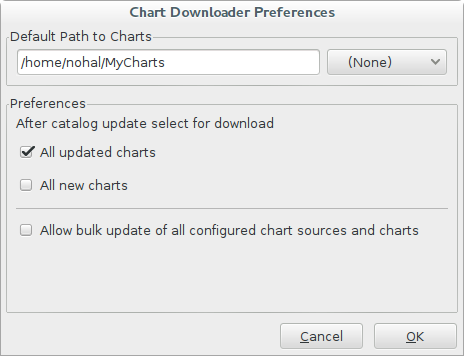
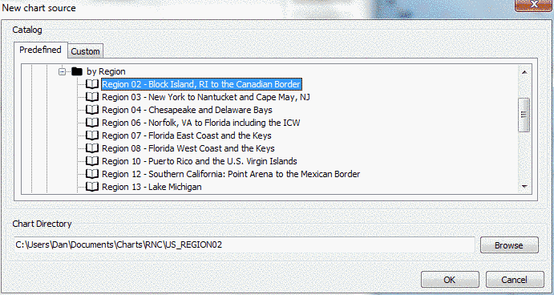
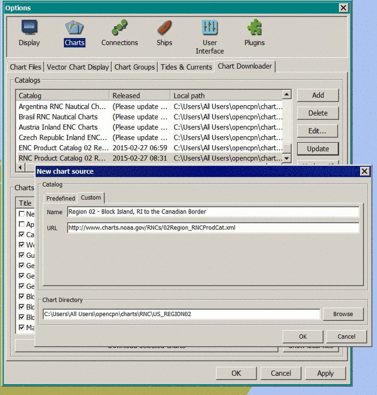

The chart downloader plugin is a handy tool that can automatically use the Internet to keep your free charts up to date. No longer do you have to go to a web site, download large .zip files then manually unzip them. The plugin will do all that work for you. A bonus feature is that it only downloads charts that have changed since the last time you udpated chart files which can reduce the amount of data downloaded. This tool is just a way to automatically download charts. The plugin does not change the way OpenCPN works and you don’t have to use it to manage your charts at all, it just makes managing your charts easier once you have a working Internet connection.
Existing OpenCPN users will no doubt already have charts and they may wish to have the downloader plugin keep these existing charts up to date. Below we explain how the downloader works so that you can utilize it to automatically update your existing charts.
The plugin by default assumes you keep your charts in a multilevel directory tree, separating charts both by type (raster/vector) and by the coverage area. While it is not needed, we strongly suggest you adopt this scheme as it
Charts top level folder
|-ENC
|-Some area
|-Another area
|-RNC
|-Some area
|-Another area
|-Yet another are
By default the plugin places all your chart bellow
<Your documents folder>\Charts
. In case you don’t like the location, you can change it in the plugin preferences dialog. Get to it by
Options
>
Plugins
>
ChartDownloader
>
Preferences
after you enable the plugin.

The Default Path to Charts tells the downloader the top level directory where all your charts are stored. This default path will be used along with any additional subdirectories defined for each chart catalog to define the entire path to charts.
Most existing users will want to select the check box labeled All updated charts so that is the default. This tells the downloader that you want to download any charts that are newer than the charts you have. You can also select All new charts . This will tell the downloader that we also want to automatically download any new charts that don’t already exist. Before selecting that we recommend that you read through this documentation and then decide if you need that option or not. Most existing users don’t need to use that option.
This may seem a little confusing at first so let’s look at an example. Assume you have entered the Default Path to Charts as C:\Users\Dan\Documents\Charts. Then go to the “Predefined” charts tab by selecting Options > Charts > Chart Downloader > Add Catalog then select the “Predefined” tab. There you will find a tree of predefined chart catalogs. One of these is the USA - NOAA and Inland Charts > RNC > by Region > Region 02 - Block Island, RI to Canadian Border . If you click it you will see something like this:

Many users will have all their existing raster charts stored in one directory called BSB_ROOT and vector charts in one directory called ENC_ROOT. In the above example there is no BSB_ROOT directory and you may be wondering why not. The large .zip files from NOAA have BSB_ROOT or ENC_ROOT as their top level so it will be easier to combine multiple .zip files into a single directory structure. If you unzipped multiple files into the same directory then all your chart files will be in one big directory called BSB_ROOT or ENC_ROOT.
If you already have some region 2 charts in a directory called BSB_ROOT and you want to keep them up to date just click on the Browse button or edit the path in Chart Directory so that it points to the BSB_ROOT or whatever the directory name where region 2 charts are stored now. Then click OK and you are ready to update your region 2 raster charts.
After clicking OK you will be back at the main plugin screen. Click the button on the right labeled Update . This will check your existing charts against the current NOAA region 2 database. Any existing charts that are out of date will be marked with a check box and the status will show Update available . Any charts that are not in your chart folder will show status as New . The rest will show status Up to date . If you want to get some new charts scroll through the list of charts. Click the check box of any new charts you would like to see.
Download all the charts with a check box by clicking the button at the bottom labeled Download selected charts .
If the status shows New for every chart you will get a message that no charts were selected for download. In that case you may not have gotten the chart directory right. You can edit the chart directory by clicking the button labeled Edit… . This brings up a dialog box similar to the Add Catalog button except you can edit the Name, URL and Chart Directory. Be careful if you change the URL because if the wrong URL is given the chart downloader will not be able to find the NOAA chart catalog. Once you have the Chart Directory correct click OK then Update followed by Download selected charts . All your existing charts for region 2 will be updated to the latest revision.
Once you have downloaded charts, the plugin sets OpenCPN to scan for new and updated charts and update it's chart database once you close the Toolbox.
You can keep all your charts updated in their existing directories (typically two directories called BSB_ROOT and ENC_ROOT) or you can keep each group of charts in separate directories. This latter choice is what the downloader does by default. It puts charts from each new source into a new directory beneath the Default Path to Charts in Preferences . There is a good reason to use this scheme as it makes defining groups of charts in OpenCPN much more straightforward.
If you want to keep your charts in their existing directories then when adding each catalog simply change the Chart Directory so it points to the BSB_ROOT or ENC_ROOT or whatever directory your chart files are in now. If your existing charts are in two big directories (ENC_ROOT and BSB_ROOT) you may wish to add just the catalogs ALL RNCs and ALL ENCs. Make sure the Chart Directory for each one points to the correct root directory (e.g. BSB_ROOT or ENC_ROOT).
The plugin tries to save you all the work with setting up OpenCPN to see your charts when you configure the catalogs. If you decide to later change the directory structure for your charts, make sure to adjust the respective configuration on Options > Charts > Chart Files tab.
That’s pretty much all there is to setting up the downloader for existing charts. Next we look at how to keep your chart catalogs up to date.
Once you have everything set up the way you like there is a one-button update process available. As it might be confusing for new users, the function is disabled by default and you have to enable it in the plugin preferences by ticking the Allow bulk update of all configured chart sources and charts checkbox. A new button, labeled Update All appears on the Chart Downloader tab. This button will update each catalog starting from the first one and then download any updated charts according to the Preferences check boxes. Usually this will be All updated charts . If you want to get all new charts automatically with one-button update then select All new charts in Preferences too.
The plugin allows definition of completely customized chart sources. If you want to make your own set of charts available to be managed by the plugin, you will have to create your own XML chart catalog and make it available on a webserver. Refer to
https://github.com/chartcatalogs/catalogs
for examples of catalogs covering the non-US charts available.
To configure the plugin to use your chart catalog, click the “
Add
” button, go to the
Custom
tab and enter the URL of you catalog and the destination directory for your charts.
